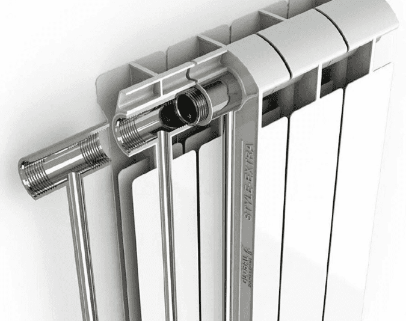

Установка и замена батарей отопления

Радиаторы уже предусмотрены во всех домах, но ведь иногда бывает так, что даже при наличии нескольких
батарей дом недостаточно хорошо прогревается. В таком случае, если зима особенно холодна, а имеющиеся
батареи не справляются с морозом или просто нет отопительных устройств в какой-то комнате, нужна
установка радиаторов отопления. С ними в доме не будет ужасной влажности, приводящей к грибковому
поражению стен и мебели, не будет ужасных холодов, от которых сводит зубы.
Почему радиатор, или другими словами батарея так хорошо справляется с обогревом помещений?
Устройство радиатора отопления очень просто. По нему циркулирует горячая вода, она передает тепло
металлическому каркасу, а он нагревает воздух. Горячий воздух поднимается к потолку, а холодный опускается
вниз. Такое движение воздуха называется конвекцией. Чтобы конвекция проходила более эффективно, установка
батареи отопления проходит всегда одинаково.
Чтобы дом обогревался лучше, установить батарею отопления желательно возле окна и как можно ниже. Тогда весь
холодный воздух, который попадает в дом с улицы, сразу же будет нагреваться и не сможет доставить дискомфорт
жильцам.
Важные вещи, о которых необходимо помнить до того, как начать монтаж радиаторов отопления.
Очень важно выбрать подходящий тип радиатора. Ведь не все они одинаковы: одни радиаторы дорогие и не достаточно
эффективные в определенных случаях, а другие слишком массивны для того помещения, в которое их хотят установить.
Начать стоит со стальных радиаторов. Установка батарей из стали была очень популярна во времена СССР. Такие
радиаторы имеют очень низкую инерционность и достаточно большую отдачу тепла. Их цена и энергозатратность радуют
всех, но все же такие батареи не очень долговечны.
После того, как воду из них сливают, что обычно делают в конце отопительного сезона, радиаторы начинают ржаветь
изнутри. Ну и еще, они громоздкие и поэтому монтаж радиатора из стали подойдет не для всех стен и кронштейнов.
Более легкие и удобные радиаторы делаются из алюминия. У них очень высокая теплоотдача и скорость нагрева. Если
кислородная оболочка алюминия растворится, то металл станет очень активным, а значит, коррозийность возрастёт.
Установка радиаторов из чугуна тоже популярна в России. Эти радиаторы, в отличие от двух предыдущих могут
прослужить до полувека, а все из-за неактивности металла. Также чугун обладает большой теплоемкостью, поэтому
после того, как отопление отключат, тепло сохранится еще несколько часов. Однако и теплоемкость имеет
отрицательную сторону – после подключения такой батареи к узлу теплоснабжения, нужно долго ждать его нагревания.
Для тех, кому хочется использовать лучшие свойства радиаторов из алюминия и стали созданы биметаллические
батареи. Их сердцевина выполнена из стали, а оболочка из алюминия. Однако, прежде чем проводить монтаж батарей
отопления из двух металлов, стоит убедиться в том, что денег хватит, ведь их цены очень велики. Но ради долгой
службы и высокой теплоотдачи можно отдать любые деньги.
Есть более сложные для установки радиаторы, которые монтируются прямо в пол. Они почти не занимают места,
равномерно прогревают помещение, и при этом из-за них не запотевают окна. Однако монтажная длина очень высока и
из-за того, что радиатор находится под полом, отдача тепла невысока.
Почему непрофессионал не должен пытаться установить батарею?
Установка радиатора отопления – очень сложная задача, она должна быть выполнена с высокой точностью.
Малейшее отклонение от стандартов может привести к падению эффективности обогрева.
Вообще тот, кто не разбирается в установке сантехнического оборудования, может допустить немало ошибок. Вот
несколько наиболее частых, после которых установка радиатора не принесет должной пользы:
Даже если монтаж батареи отопления прошел правильно, что очень маловероятно для работы непрофессионала,
батарея может быть помещена в место, которое снижает теплоотдачу. Например, если поместить батарею в
декоративный короб, отдача тепла упадет на 15, а то и 20 процентов. А если подоконник очень большой, тогда
радиатор под ним потеряет около 10 процентов тепла.
Установка батарей отопления с последующим их неверным подключением может быть напрасной тратой денег. Когда
подводящий и отводящий патрубок подключены к радиатору с одного бока, увеличение числа секций ухудшит
состояние системы. В таком случае первая секция будет нагрета на нужные 80 градусов, а остальные намного
меньше.
Даже если каким-то образом монтаж радиатора отопления прошел успешно, он был подключен правильно и все идет
хорошо, неправильный уход за батареей может все испортить. К примеру, если покрасить радиатор в несколько
слоев, тепло будет задерживаться воздушной прослойкой между слоями краски, поэтому обогрев помещения
ухудшится. Если уж красить, то только в черный цвет, тогда теплоотдаче возрастет, но совсем чуть-чуть. Также
не стоит красить радиатор в белый цвет, это немного ухудшит теплоотдачу.
Установить батарею правильно не так уж и сложно
Если доверить это дело профессионалу, ведь у многих людей, которые не разбираются в установке сантехнических
приборов, уже могла закружиться голова от всех тонкостей. А вот высокоуровневые сантехники из компании
«Служба сантехников» могут легко и профессионально установить радиаторы отопления, любой вид батарей, от
стальных до биметаллических и подпольных. Результат их работы порадует любого клиента, даже самого
требовательного.
Чтобы ваше радиаторное отопление стало заботой мастеров с большой буквы, нужно вызвать сантехников по номеру
+7 (495) 066-06-67. Тогда батареи будут установлены грамотно и надежно. После такой работы в дому будет
уютно и тепло, никакие суровые сибирские холода или даже проливные дожди не испортят погоду в доме.